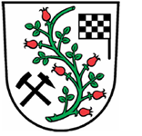

Meuro und Umgebung
Der Ort Meuro
Ein kleines beschauliches Örtchen im Süden Brandenburgs in direkter Nachbarschaft zum Lausitzring. Im Zentrum des örtlichen Gemeindelebens steht der Dorfclub Meuro e.V. mit zahlreichen Aktivitäten. Durch Förderung von regelmäßigen Veranstaltungen wie das Vogelscheuchenfest, Zampern, Osterfeuer und Kinderfeiern wird das kulturelle Leben angeregt.
Pilzrevier
Gerade im Spätsommer und Herbst sind die Wälder um Meuro ein Paradies für Pilzsammler. Wie die Nummernschilder zeigen, kommen Pilzfreunde aus über 100 km Entfernung hierher. In den Kiefer- und Eichenwäldern finden sich unter anderem Steinpilze, Maronen und Birkenpilze. Wie wäre es mit einem entspannenden Pilzsammelwochenende mit der ganzen Familie hier in Meuro?
Snowtropolis
Im Winter wie im Sommer erleben Sie dort Skispaß und mehr. Das Schneesport- und Freizeitresort bietet Pistenspaß in der Skihalle, Bowling, Saunavergnügen, Schlittschuhlaufen in den Wintermonaten oder Badminton, Volleyball und Tennis in den Sommermonaten - für jeden ist garantiert etwas dabei! Weitere Informationen...
Besucherbergwerk F60
Besuchen Sie eine der größten beweglichen Arbeitsmaschinen der Welt - das Besucherbergwerk F60. Mit einer Länge von über 500 Metern bei einem Gesamtgewicht von ca. 11.000 Tonnen bietet dieses atemberaubende Bauwerk die Möglichkeit für einen interessanten Ausflug mit Ausblick. Weitere Informationen zu Öffnungszeiten und Veranstaltungen finden Sie auf der Website des Besucherbergwerkes F60.